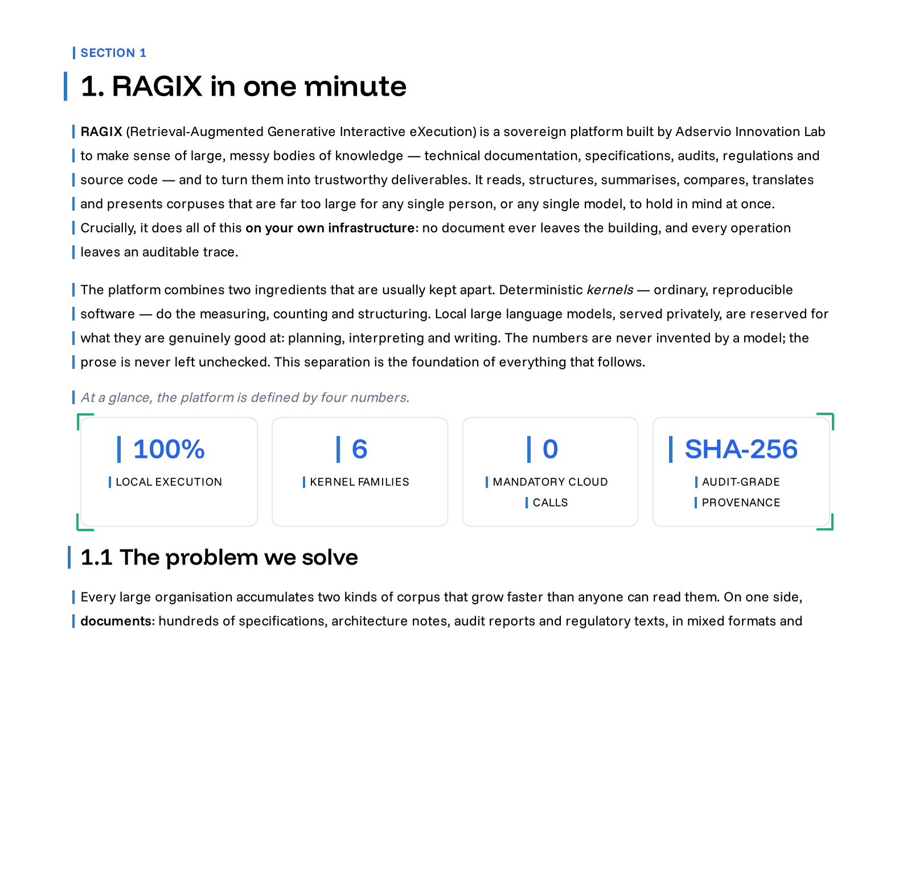

The document substrate of RAGIX: PDF, Word, Excel, PowerPoint and Markdown read into one typed tree, with an exact citation on every node, by tested rules and without any language model.
Model-freeCiteableReplayable

One public page: each bar marks a text run Saqqara records, with its exact place.